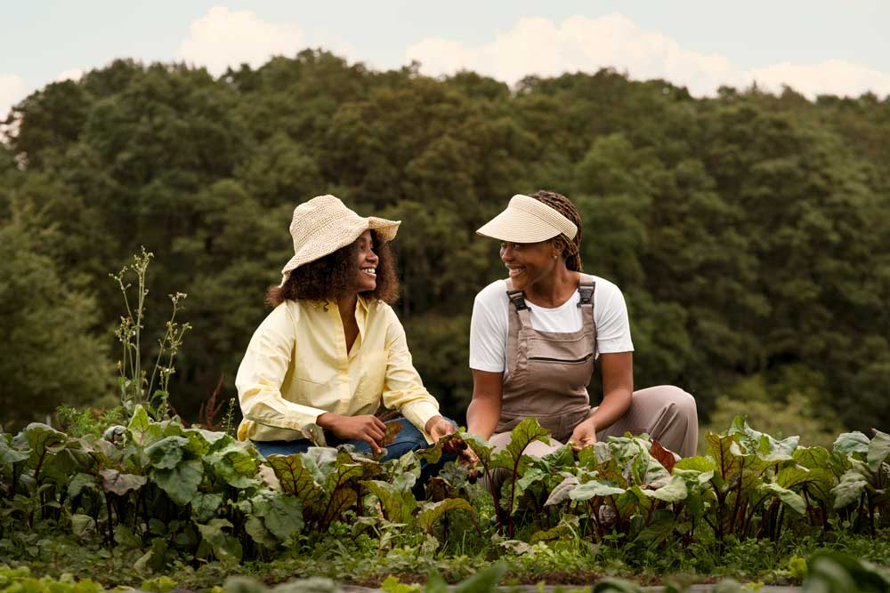
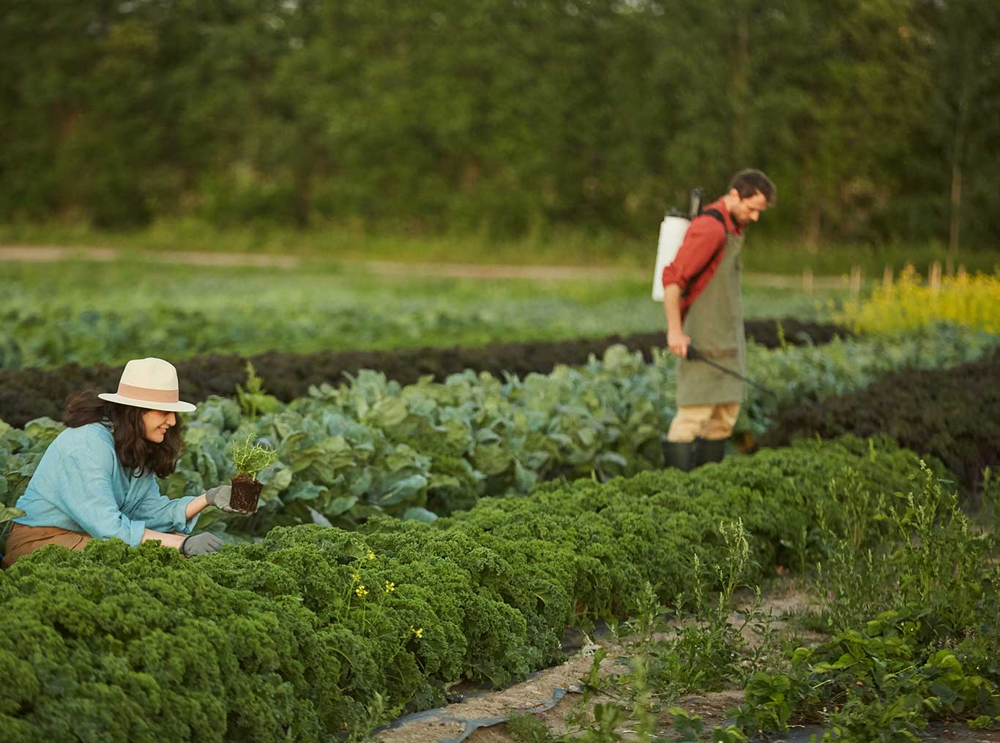

11
Feb
February 11, 2026
In the heart of Canada’s prairies, the land holds more than just crops—it carries the potential for a more sustainable future in agriculture. Saskatchewan’s rich natural resources have long supported Canadian farmers, and we are now harnessing these resources to help growers transition to eco-friendly farming solutions.
A shift toward sustainability
For decades, conventional fertilizers have been the backbone of modern agriculture, ensuring high yields to feed a growing population. However, farmers today face increasing challenges—soil depletion, environmental concerns, and the need for more sustainable practices. As demand for regenerative agriculture rises, so does the need for innovative solutions that enhance soil health without compromising productivity.
We founded DLK Fertilizers with a mission to bridge this gap. Starting with liquid fertilizers, we quickly gained traction among farmers looking for high-performance solutions. But as the agricultural industry evolved, so did our vision. We expanded our portfolio to include products designed to improve soil structure, increase nutrient retention, and reduce environmental impact.
Unlocking the power of leonardite
One of the keys to our sustainability efforts lies beneath Saskatchewan’s soil—leonardite, a naturally occurring, oxidized form of lignite rich in humic and fulvic acids. This valuable resource is known for its ability to enhance soil fertility, improve nutrient absorption, and promote healthier plant growth.
By responsibly extracting and processing leonardite, we are creating innovative liquid humic acid products that help farmers rejuvenate their soils and reduce dependency on synthetic fertilizers. This shift toward organic biostimulants not only benefits crop yields but also contributes to a more balanced ecosystem.
Partnering with farmers for a greener tomorrow
The transition to eco-friendly farming isn’t just about new products—it’s about collaboration. We work closely with farmers to ensure that sustainability doesn’t come at the cost of efficiency. Through research, field trials, and expert support, we empower growers to make informed decisions that benefit both their business and the environment.
As more farmers recognize the value of soil-first approaches, the shift toward sustainable agriculture is gaining momentum. We are proud to be part of this movement, helping to cultivate a future where high-yield farming and environmental responsibility go hand in hand.
The land has always been a source of nourishment and opportunity. With the right innovations, it can also be a foundation for a more sustainable world. And we are committed to making that future a reality—one field at a time.

Interested in learning more about how DLK Fertilizers can revolutionize your farming practices? Get in touch with us today!